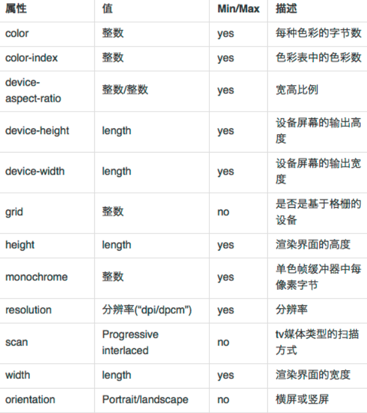

CONTENT OUTLINE
CSS响应式设计有关内容
– 媒体查询
– rem/em
一、媒体查询 Media Queryies
Media Queries直译过来就是“媒体查询”，在我们平时的Web页面中head部分常看到这样的一段代码：
1 | <link href="css/reset.css" rel="stylesheet" type="text/css" media="screen" /> |
而这个“media”就是用来指定特定的媒体类型，在HTML4和CSS2中允许你使用“media”来指定特定的媒体类型，如屏幕（screen）和打印（print）的样式表，当然还有其他的，比如说“TV”,“handheld”等，其中“all”表示的是支持所有媒体介质。有关于更多的Media类型，可以点击这里。
举个例子
1 | <link rel="stylesheet" media="screen and (max-width: 600px)" href="small.css" /> |
上面的media语句表示的是：当页面宽度小于或等于600px,调用small.css样式表来渲染你的Web页面。
- screen：这个不用说大家都知道，指的是一种媒体类型；
- and：被称为关键词，与其相似的还有not,only，稍后会介绍；
- （max-width:600px）：这个就是媒体特性，说得通俗一点就是媒体条件。
上述的代码换成css的写法如下:
1 | screen and (max-width: 600px) { 选择器 { 属性：属性值； } } |
常用的Media Query如下表所示：
color
color-index
aspect-ratio
device-aspect-ratio
device-height
device-width
grid
height
monochrome
orientation : landscape | portrait
resolution
scan
width

Media Queries的具体使用方式
1. 最大宽度Max Width
1 | <link rel="stylesheet" |
上面表示的是：当屏幕小于或等于600px时，将采用small.css样式来渲染Web页面。
2. 最小宽度Min Width
1 | <link rel="stylesheet" |
上面表示的是：当屏幕大于或等于600px时，将采用large.css样式来渲染Web页面。
3. 多个Media Queries使用
1 | <link rel="stylesheet" |
上面的表示的是当屏幕在600px-900px之间时采用style.css样式来渲染web页面。
4. 两种加载方式
1 | <!-- CSS media query on a link element --> |
注意：所有的media query css都会加载，只有符合条的会被解析
5. 标准语法
1 | media_query_list: <media_query> [, <media_query> ]* |
6. 逻辑操作符
- and 同编程语言里的and
- not 同编程语言里的not
逗号 ： 当逗号两边的条件有一个为真都为真， 同编程语言里的or
Example
1. 提供一组目前的适配移动端屏幕的Media Queries
根据不同的手机屏幕,设置基于html元素的字体大小,利用rem的方式实现移动端屏幕的适配
(注:这套适配方案是按照640的屏幕,获得的实际大小除以40,如获得的字体大小为40px,那么转换为rem就是1rem)
1 | @media only screen and (max-width: 321px) { |
二、响应式设计中的 em/rem
rem是指：根元素（root element，html）的字体大小，
em是指：父元素的字体大小。
注: 可以引入 CSS 预处理工具（Sass、LESS 、Stylus等）自动计算 rem 值。